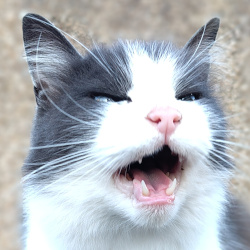

2026 March Listicle
Written in
2026 March: Stanley's Music Listicle

Introduction and Links
Spotify Playlist: https://open.spotify.com/playlist/6U6IRS7PH5hs0HWooKQd2F?si=yHnf6WDyTWKA5IhYS_A3hQ
https://shorturl.at/qPuBIYoutube Playlist: https://youtube.com/playlist?list=PLTaOJcv49V681sFTjN5IFTyj0nf839V&si=e_9oJQeFmdpipMkw
https://shorturl.at/2eXhIInitial Shortlist: https://youtube.com/playlist?list=PLTaOJcv49V6-um-0LFrI155Ila&undnerscore;TImwBB&si=xN4WM-_tz7nrLLfg
https://shorturl.at/kfokUThe Hu released a track this month. Didn't even get to the longlist!
Trident - Sugars Song
Country of Origin: No idea
Youtube Views: 9
Spotify Link: https://open.spotify.com/track/5dfZRevvebO6IfeVBS5Frr?si=fac13bd6755b49fb
Video Link: https://youtu.be/Dotb5cL-yGA?si=jdR7a-NAR2r3q9Wb
Can't find a video. I'm not even really sure who the artist is. I've searched for Trident on multiple sites. The seems to be two million artists called Trident none of whom sound like one another and all of which are filed under the name Trident. It could be written by a deranged AI for all I know. I'm pretty sure they mess up rhyming onions & bunions. But I like the bassline vibe.
Blue Medusa - Checkmate
Country of Origin: United States of Dystopia
Youtube Views: 240k today
Spotify Link: https://open.spotify.com/track/0fN3tONYZxGcuwyr5IoTZ1?si=0a11abb45add42cd
Video Link: https://youtu.be/T21hSKREXGk?si=UBnqdkfeYaQ_LJzq
Another music video where no one knows how to dress themselves properly. Debut single from the new band of a well known death metal singer.
:devilfingersemojji:
The Suicide Diary - Dum Dum
Country of Origin: South Korea
Youtube Views: 101 (total, not 101k,)
Spotify Link: https://open.spotify.com/track/7LejDiEo66ywqax0uwYAQp?si=ca08783e279c47bf
Video Link: https://youtu.be/FBRhjXYSP4I?si=6skDi_Zf1dailjzp
bandcamp link to buy the EP https://thesuicidediary.bandcamp.com/album/el-pino.
It's like dreampop and shoegaze had a slightly depressed baby.
Rolling Quartz - Red Hot
Country of Origin: South Korea
Youtube Views: 274k, I think half of them might be my toe beans pressing F5
Spotify Link: https://open.spotify.com/track/07yMRUY7PvOsPHqPw8S6v6?si=d1e67f35ab204706
Video Link: https://youtu.be/6J7K9Wi8uJ4?si=ncH-18mCJJp6PErZ
I like this pop / rock / slightly metal song. I like the video. For some reason the drummer in the video absolutely cracks me up. Hence in this list. There's also a joke about poop I don't understand.
The Warning - Kersone
Country of Origin: Mexico
Youtube Views: 1.1 million
Spotify Link: https://open.spotify.com/track/2xixXiLYi3FsNF0m9vEV2G?si=314c9e32190840a4
Video Link: https://youtu.be/xGRH6MvX2Oo?si=Qp_cM43snzQQC-BY
Thelma and Louise make a band and become arsonists.
Heck yeah!
SuperKidd - I Can't Die Like This
Country of Origin: South Korea
Youtube Views: 88 (I think it is an old song and they have reupped the video?)
Spotify Link: https://open.spotify.com/track/05HmaFum17FnnXNiTYzWDG?si=1b417dbc45b840c9
Video Link: https://youtu.be/Us14O0llRfE?si=j75pWmR1Hi39tytZ
Earwormed me. It's from 2010 when they were called SUPER KIDD according to Spotify. Here's a link to thei rmost popular song on Spotify https://open.spotify.com/track/28q2WpSin10XGVcyrpYCK8?si=0a96640797fe479c
Disco is back, baby.
Band Name - Song Title
Country of Origin: Iranian (Also Dutch)
Youtube Views: 22k (I think it's a reup)
Spotify Link: https://open.spotify.com/track/3qyiGu03ppAuBbUbDHBKU4?si=ef233e59aa5240ec
Video Link: https://youtu.be/rEUEGALuBjg?si=QeWi5WuRiluSF9YR
In this list because of the Ukraine amendment to the Morning Crescent Compendium, Appendix III of 2020.
Sounds like a Eurovision contender.
周震南 (Vin Zhou) - Yuck (ex member of R1SE)
Country of Origin: China
Youtube Views: 531 (form a channel with more than half a million subscribers)
Spotify Link: https://open.spotify.com/track/6EmIKmE9tRyXeu3Zzmd3r5?si=08b1aa0ade494cd1
Video Link: https://youtu.be/mrwav9nCLjQ?si=PukSwfsGeLObEJHG
The video has rats, traffic cones, teddy bears and all sorts of stuff happening. I don't really know what it is about but I am here for it.
There may also be a man dressed as a giant baby?
Dragon Pony (드래곤포니) - Oh Perfect!(아 마음대로 다 된다!)
Country of Origin: South Korea
Youtube Views: 5.7k
Spotify Link: https://open.spotify.com/track/3LKZCLEnspadu6UQIOTPVD?si=b0545e0bc75d4fec
Video Link: https://youtu.be/qcuKFGbiLlo?si=mrHpC5HFhdYcZy-R
I'm sure this is a great time for Korean boy bands to be releasing music. Quite certain there won't be any competition ...
Mayumura Chiaki (眉村ちあき) - again
Country of Origin: Japan
Youtube Views: 13k
Spotify Link: https://open.spotify.com/track/1aseYWvk8nyKCLYIBkMyRr?si=a0f0bd42628c45e9
Video Link: https://youtu.be/xcYIrjg5je8?si=RMrsYTNvG-UDPO
Sometimes when lounging in the sun I see the fattest of my humans dancing like this.
It's distressing.
Runners Up: Big Guns
A couple of significant acts released songs that never made it into the top ten
BTS (방탄소년단) - SWIM
Country of Origin: South Korea
Youtube Views: 62 million
Spotify Link: https://open.spotify.com/track/68lbSrXDORS51pmyjZv712?si=2f8289e218c84fc3
Video Link: https://youtu.be/b4iVv91Z6lY?si=4mHjVGL_J0wkVuqv
It's BTS. They're quite popular.
Ado - AiAiA
Country of Origin: Japan
Youtube Views: 1.4 million
Spotify Link: https://open.spotify.com/track/10HeYTTDc5jxAnjRwWfwIe?si=3d4560e59e764f04
Video Link: https://youtu.be/_8CNByAq1n4?si=rfaDxJsJjdZmHi6J
The mysterious Ado releases this odd number from the deranged circus music genre. The 1Tak video is the best version.
Toxicitiyuri
For some reason all these songs clumped in my head. I don't know why.
MYERA - Crushproof
Country of Origin: Japan
Youtube Views: 160k
Spotify Link: https://open.spotify.com/track/4zD29sxTjNyFIrvmcvIiKf?si=2ed98d7e2dda4bea
Video Link: https://youtu.be/LGr1l9yOhC8?si=_iMrbAR5y5xLJiIf
I don't need a boy.
YENA (최예나) - 캐치 캐치 (Catch Catch)
Country of Origin: South Korea
Youtube Views: 1.2 million
Spotify Link: https://youtu.be/NOiyDlWl534?si=iD3jwetCTMwRtbbD
Video Link: https://youtu.be/NOiyDlWl534?si=iMq7pPSDvmyuBNDz
Catch catch my heart, heart goes up down down heart goes up down down ...
Da daradada
Sakurazaka46 - Dried fruit
Country of Origin: Japan
Youtube Views: 459k
Spotify Link: https://open.spotify.com/track/5DrxCKjopmd7UL1pJWqBHK?si=a3876d5f07ca4b52
Video Link: https://youtu.be/iCjPelKCm7w?si=n8XfMBssWZPZCsv0
"An everlasting life only ends up not knowing what to do with it. "
A different philosophy from YENA
Endings
All flesh is grass and therefore this edition comes to an end.
So many good songs never made it on this list. POLKADOT STINGRAY with 'Boy Boy' was robbed.
Listen to the long list and let me know if you think anything should have made it in.
Stanley.
A Cat. Nyaa.